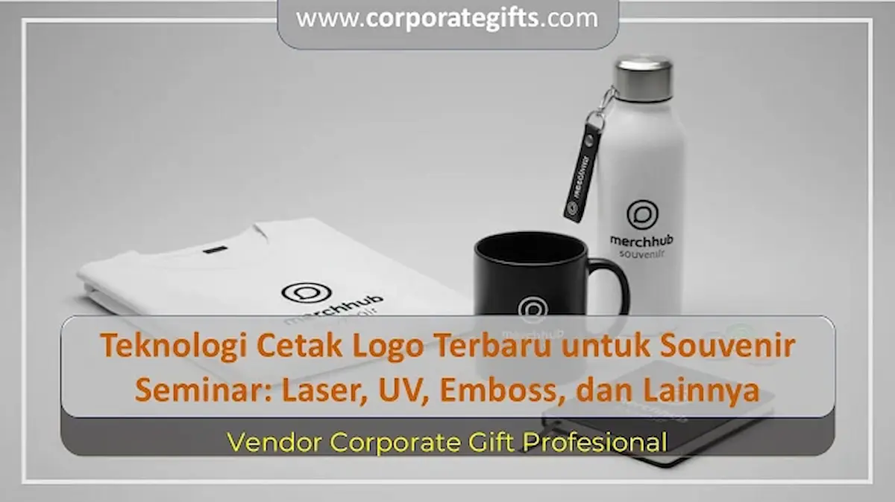

Corporate Gifts ID - Dalam dunia pengadaan souvenir seminar dan konferensi korporat, kualitas cetakan logo menjadi salah satu faktor penentu kesan profesional serta daya tarik sebuah acara. Logo yang dicetak dengan teknologi tepat akan membuat cinderamata tidak hanya bermanfaat bagi peserta, tetapi juga mampu mengomunikasikan prestise dan reputasi institusi penyelenggara secara konsisten dalam jangka panjang.
Sering kali, panitia seminar berfokus penuh pada pemilihan jenis barang, namun kurang memperhatikan teknik kustomisasi logo yang diaplikasikan. Padahal, logo yang mudah mengelupas, buram, atau pecah dapat menurunkan citra eksklusif yang ingin dibangun. Oleh sebab itu, memahami karakteristik masing-masing teknologi cetak logo modern sangat penting sebelum memproses pesanan pengadaan.
Poin Kunci Teknologi Cetak Logo Souvenir Seminar:
- Presisi & Ketahanan: Pemilihan teknik cetak wajib disesuaikan dengan tekstur material dasar agar logo menempel sempurna dan tahan gesekan harian.
- Laser Engraving untuk Logam: Memberikan ukiran permanen tanpa tinta pada material stainless steel, alumunium, dan kayu dengan kesan sangat mewah.
- UV Printing untuk Desain Kompleks: Solusi terbaik untuk logo full color, bergradasi halus, atau memuat detail grafis foto beresolusi tinggi.
- Deboss/Emboss untuk Media Kulit: Menciptakan efek cekung atau timbul 3D yang elegan pada sampul agenda seminar dan ID card holder.
- Vektor 300 DPI Wajib: File sumber berformat vektor (AI, PDF, CorelDraw) adalah syarat mutlak agar cetakan tidak pecah di mesin produksi.
Mengapa Pemilihan Teknologi Cetak Logo Sangat Krusial?
Souvenir seminar kit adalah duta fisik representasi perusahaan yang akan dibawa pulang oleh peserta, pembicara, maupun sponsor. Ketika peserta menggunakan tumbler, buku catatan, atau flashdisk tersebut di kantor mereka, logo yang tertera akan dilihat oleh rekan kerja dan mitra bisnis lainnya.
Apabila metode cetak yang digunakan tidak sesuai dengan karakteristik material, resiko terbesar adalah lunturnya tinta saat terkena keringat tangan atau air, serta terkelupasnya lapisan sablon. Sebaliknya, teknik branding yang tepat akan menjaga ketajaman visual logo selama bertahun-tahun, sehingga biaya pengadaan seminar kit menjadi investasi promosi ber-ROI tinggi.
6 Jenis Teknologi Cetak Logo Populer untuk Souvenir Seminar
Berikut adalah enam metode personalisasi logo yang paling banyak diaplikasikan dalam industri cinderamata modern beserta karakteristik unggulannya:
1. Sablon Presisi (Screen Printing)
Sablon presisi merupakan metode klasik yang menggunakan kain kasa saring (screen) dan pasta tinta khusus. Teknik ini sangat ekonomis untuk produksi massal dengan jumlah di atas 100 pcs dan ideal untuk logo solid dengan 1 hingga 3 warna dasar. Sablon banyak diaplikasikan pada goodie bag spunbond, totebag kanvas, map folder, payung promosi, dan bodi pulpen plastik.
2. Grafir Laser (Laser Engraving)
Grafir laser memanfaatkan sinar laser berintensitas tinggi untuk mengikis lapisan permukaan terluar produk secara mikro. Keunggulan utamanya adalah sifatnya yang 100% permanen, tahan gores, dan tidak menggunakan bahan kimia cair. Grafir sangat cocok untuk souvenir tumbler stainless, pulpen metal eksekutif, flashdisk kartu logam, dan gantungan kunci kayu.

Kombinasi teknik grafir laser, UV printing, dan deboss pada paket seminar kit premium untuk instansi korporat.
3. UV Digital Flatbed Printing
Teknologi UV printing mencetak tinta cair langsung ke permukaan barang dan mengeringkannya secara instan menggunakan sinar ultraviolet. Metode ini memungkinkan reproduksi warna gradasi yang kaya, detail teks super kecil, hingga tekstur efek timbul (varnish glossy). Sangat fleksibel diterapkan pada material plastik, akrilik, kaca, karet silicone, maupun powerbank.
4. Deboss & Emboss (Blind Stamp & Foil)
Teknik ini menggunakan plat cetak (klise tembaga/kuningan) yang dipanaskan dan ditekan ke permukaan material. Deboss menghasilkan efek logo cekung ke dalam, sedangkan emboss menghasilkan efek logo timbul. Penambahan lembaran foil emas atau perak (hot stamping) memberikan sentuhan mewah pada buku agenda kulit, sertifikat map, dan pouch organizer seminar.
5. Heat Transfer & Sublimasi Digital
Metode ini mencetak desain ke kertas transfer khusus sebelum dipindahkan ke media kain menggunakan mesin press bersuhu tinggi. Sublimasi menyatu dengan serat poliester sehingga tidak terasa kaku dan tahan dicuci berulang kali. Biasa diaplikasikan pada lanyard id card printing, kaos polo peserta, dan tas ransel laptop.
6. Bordir Komputer (Computerized Embroidery)
Bordir komputer menggunakan mesin multi-head digital yang membaca pola desain secara otomatis untuk menjahit benang warna-warni ke permukaan kain. Menghasilkan rajutan padat, bertekstur kuat, dan bernilai estetika tinggi pada topi baseball panitia, jaket bomber seminar, dan polo shirt berkerah.
Tabel Perbandingan Teknologi Cetak Logo Seminar
Tabel berikut menyajikan komparasi mendalam antara tiap metode cetak logo berdasarkan daya tahan, kompatibilitas warna, dan efisiensi biayanya:
| Teknologi Cetak | Material Paling Cocok | Karakteristik Warna | Tingkat Daya Tahan | Rekomendasi Jumlah Order |
|---|---|---|---|---|
| Sablon Presisi | Kain, Kanvas, Plastik, Kertas | Warna solid (1-3 spot color) | Tinggi (3-5 tahun) | Pesanan massal (>100 pcs) |
| Grafir Laser | Stainless Steel, Alumunium, Kayu, Bambu | Monokrom (Warna dasar material) | Permanen (Seumur hidup barang) | Fleksibel (Mulai 50 pcs) |
| UV Digital Printing | Plastik ABS, Akrilik, Logam, Kulit | Full Color, Gradasi, Foto | Sangat Tinggi & Tahan Air | Fleksibel (50 s/d ribuan pcs) |
| Deboss / Emboss | Kulit Asli, Kulit Sintetis (PU), Kertas Tebal | Efek 3D / Foil Emas / Perak | Sangat Tinggi & Bebas Luntur | Sedang ke Besar (>50 pcs) |
| Sublimasi & Transfer | Kain Poliester, Lanyard Tisu, Kanvas | Full Color & Warna Menyatu Serat | Tinggi & Tahan Cuci | Sedang ke Besar (>100 pcs) |
Panduan Memilih Teknik Cetak Berdasarkan Material Produk
Agar hasil akhir sesuai dengan ekspektasi, berikut panduan pencocokan item paket seminar kit dengan teknik cetak yang paling direkomendasikan:
- Tumbler & Botol Minum: Gunakan grafir laser untuk tumbler berbahan stainless vacuum flask, atau sablon rotary / UV printing untuk botol plastik BPA-free.
- Buku Agenda & Organizer: Pilih deboss tanpa warna (blind deboss) untuk kesan minimalis eksekutif, atau hot stamp gold foil untuk kesan seremonial mewah.
- Lanyard & ID Card: Gunakan sublimasi digital full color bolak-balik pada bahan tali tisu halus untuk memastikan nama acara dan logo sponsor terbaca jernih.
- Flashdisk & Powerbank: Pilih UV printing untuk flashdisk kartu agar seluruh bidang tertutup desain grafis acara, dan grafir laser untuk flashdisk putar berbahan logam.
- Tas Seminar & Totebag: Terapkan sablon rubber manual untuk kanvas tebal, atau sablon high-density untuk kain spunbond ramah lingkungan.
Tips Menyiapkan File Desain Logo agar Hasil Cetak Sempurna
Kualitas cetak fisik di workshop sangat dipengaruhi oleh kesiapan file digital yang diserahkan kepada vendor. Perhatikan checklist teknis berikut:
- Gunakan Format Vektor: Kirimkan master file dalam format `.ai`, `.eps`, `.cdr`, atau `.pdf` vektor agar garis logo tidak pecah saat diperbesar atau diskalakan ke ukuran kecil.
- Convert Font to Curves / Outline: Kunci semua tipe huruf pada software desain menjadi kurva agar tidak terjadi perubahan font (missing font) pada komputer operator mesin.
- Sertakan Kode Warna Pantone (PMS): Untuk teknik sablon dan UV printing, cantumkan kode Pantone resmi perusahaan guna menjaga akurasi warna identitas korporat (corporate brand identity).
- Perhatikan Ketebalan Garis Minimum: Khusus untuk teknik grafir dan deboss, hindari garis rambut (hairline) di bawah 0.3 mm agar ukiran tetap tampak jelas dan tidak terputus.
Kesimpulan
Teknologi cetak logo yang tepat adalah kunci utama dalam mengubah souvenir seminar biasa menjadi media branding bernilai tinggi. Dengan memadukan material produk berkualitas bersama teknik cetak yang presisi, seperti grafir laser pada metal, UV printing pada digital gift, dan deboss pada agenda kulit, acara seminar Anda akan meninggalkan kesan mendalam dan berkelas di mata seluruh peserta.
Ingin merancang paket seminar kit dengan hasil cetak logo yang rapi, presisi, dan tepat waktu? Konsultasikan konsep desain dan kebutuhan pengadaan institusi Anda bersama tim spesialis kami di Corporate Gifts ID hari ini.
Pertanyaan Seputar Teknologi Cetak Logo Souvenir (FAQ)

Ditulis oleh: Sholikhatun Nikmah
Creative Product Designer & Bespoke PackagingDesainer visual dan spesialis kemasan kreatif di CorporateGifts.ID dengan fokus pada personalisasi visual mockup 3D, kurasi seminar kit, dan bespoke gift set korporat.
Lihat Profil Lengkap & Panduan Lainnya